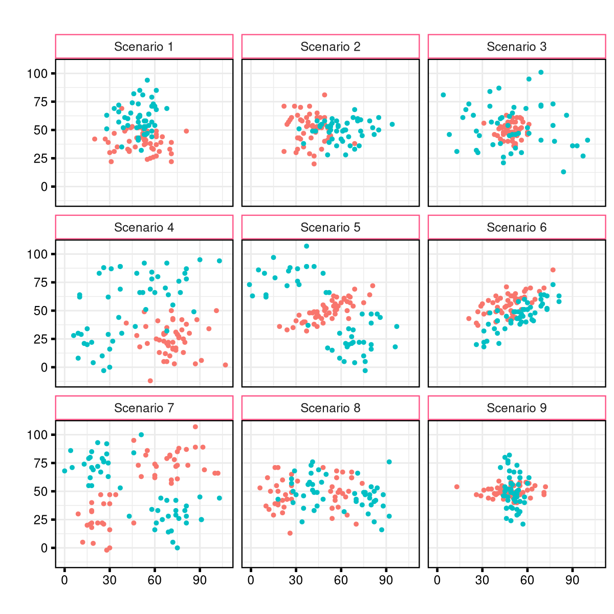
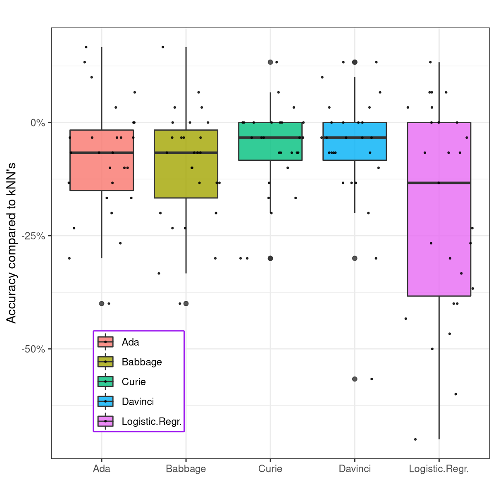
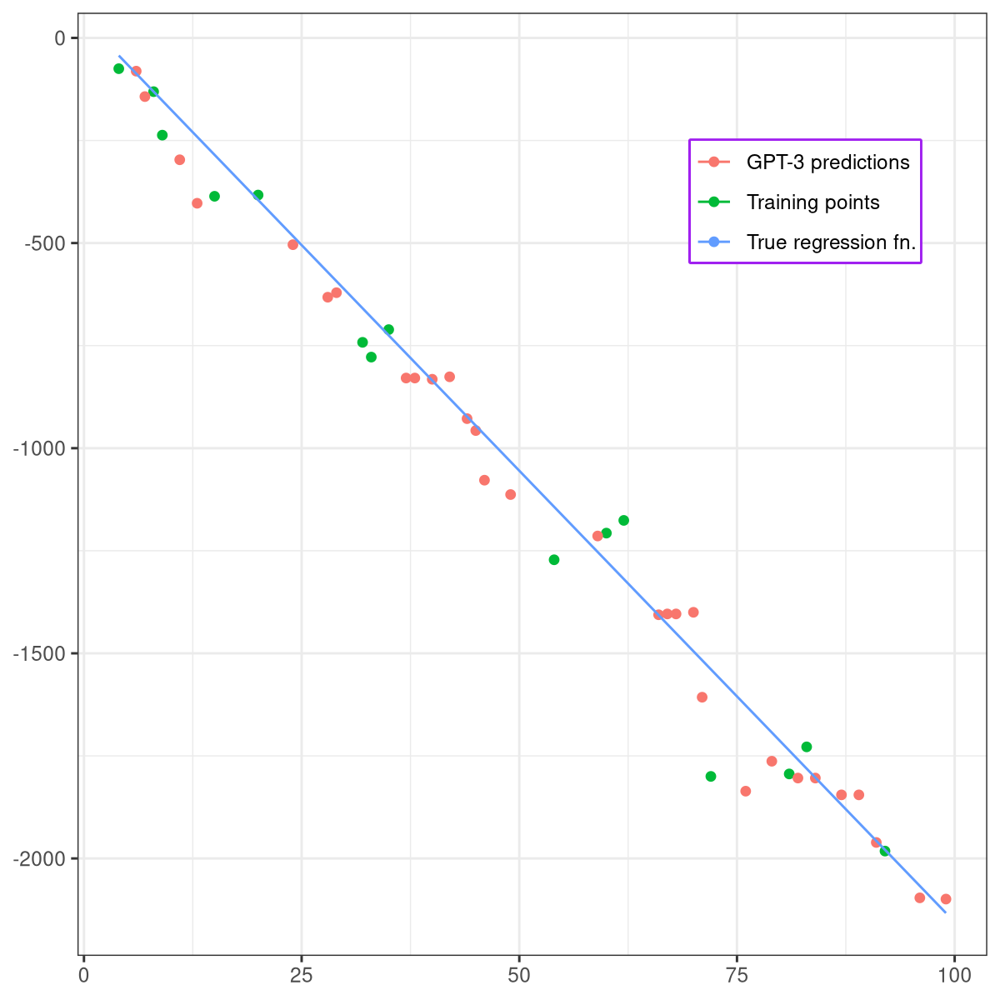
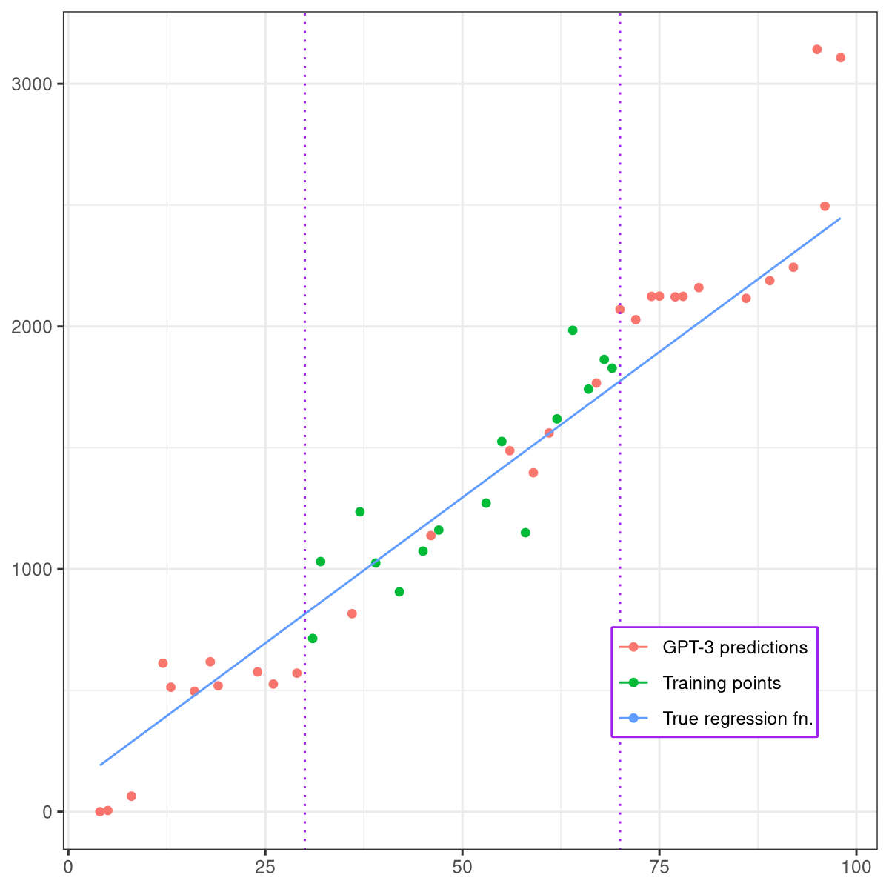
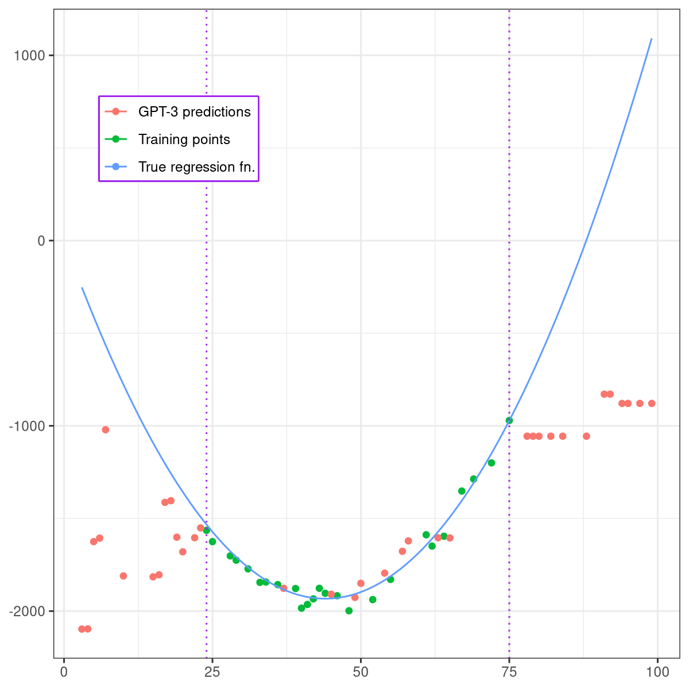
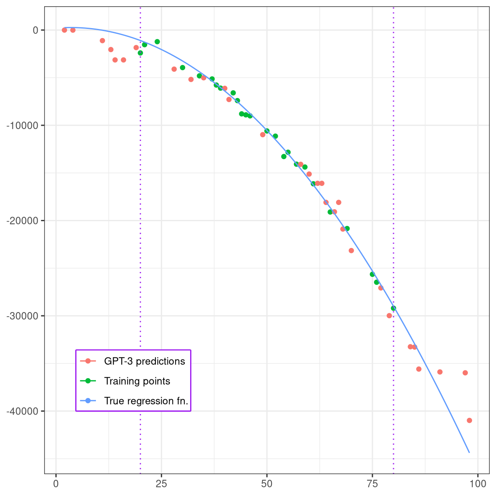

Who models the models that model models? An exploration of GPT-3’s in-context model fitting ability
Introduction
Much has been written and much has been observed about the abilities of GPT-3 on many tasks. Most of these capabilities, though not all, pertain to writing convicing text, but, not to undermine GPT-3’s impressiveness at performing these tasks, we might call this the predictable part of its oeuvre. It only makes sense that a better language modelling is, well, going to be better at writing text.
Deeper and comparatively much less explored is the unpredictable ability of GPT-3 to learn new tasks by just seeing a few examples, without any training/backpropagation – the so called in-context learning (sometimes called metalearning).
The original paper announcing GPT-3 contained a handful of examples (perhaps mostly notably examples of GPT-3 learning to perform arithmetic, e.g. accurate addition of up to 5-digit numbers), Gwern has also insightfully written about it, Frieda Rong has performed some interesting experiments, and there have been various other experiments one could chance upon. My curiosity being piqued but not sated by these experiments, and also having had the feeling that, as captivating the arithmetic examples were, they weren’t the most natural question one could ask about a stochastic model’s quantitative capabilities – I decided to investigate whether GPT-3 could fit numerical models in-context.
The Setup
What does it mean to fit a model in-context? Well, recall that GPT-3 has a context window (roughly speaking: text it considers before generating additional text) of length 2048 tokens (roughly speaking: (parts of the) words, punctuation, etc.) so the idea is to put feature vectors inside that context window. Of course, this means you cannot fit any larger or higher-dimensional dataset in there.1
In practice this means prompting GPT-3 on input like:
Input: 94, 47, 84, 31, output = 2
Input: 89, 51, 73, 31, output = 1
[...]
Input: 96, 51, 80, 38, output = 2
Input: 90, 37, 76, 27, output =And then taking its output, i.e. the text it generates, as the prediction.
A couple more technical details: In all the experiments I performed, all the numbers were integers. The GPT-3’s outputs were always sampled with temperature 0, i.e. they were deterministic – only the most probable output was considered. I restricted myself that way for simplicity, but hopefully some future work looks at the full distribution over outputs.
(In the rest of this post I share GPT-3’s results without too much warning, so if you’d like to make your own predictions about how GPT-3 does at simple classification and regression tasks in-context, now would be the time to pause reading and make your general predictions.)
Iris Dataset
Just as there is the MNIST dataset for visual recognition, so too there is a small low-dimensional classification dataset which every would-be classifier has to solve or else sink – the Iris dataset, composed of 150 observations of septal/petal height/width of three species of iris (50 observations each). Note that classification of the Iris dataset is in some sense trivial, with simple algorithms achieving near-perfect accuracy, but a model still needs to do some meaningful learning, given that it needs to learn to differentiate between three classes based on just a few dozen four-dimensional vectors.
In order to prevent leakage, as the Iris dataset is all over the internet, as well as to get the more-easily-palatable integers out, I transformed every feature with the transformation
\[ x_{\text{new}} = \operatorname{round}(14x_{\text{old}} + 6) . \]
I also split the dataset into 50% train and 50% test folds – so that the model “trained” on, or rather looked at 75 examples.
I hadn’t quite been expecting what had followed – I had expected GPT-3 to catch on to some patterns, to have a serviceable but not-quite-impressive accuracy – instead, the accuracies, averaged over 5 random dataset shufflings, for Ada (350M params), Babbage (1.3B), Curie (6.7B), and Davinci (175B), compared to kNN (k=5) and logistic regression were:
$$ \begin{array}{|c|c|} \hline \text{Model} & \text{Accuracy} \\ \hline \text{kNN} & 95.73\% \\ \hline \text{Logistic regr.} & 96.26\% \\ \hline \text{Ada} & 89.86\% \\ \hline \text{Babbage} & 93.06\% \\ \hline \text{Curie} & 95.20\% \\ \hline \text{Davinci} & 95.73\% \\ \hline \end{array} $$ So Curie and Davinci did about as well as kNN2 and logistic regression. GPT-3, just by looking at feature vectors, solves Iris.
I also conducted a few other experiments with the Iris dataset. One was not labelling the “input” or “output”, but just sending bare numbers, like this:
94, 47, 84, 31, 2
89, 51, 73, 31, 1
[...]
91, 48, 75, 31, 2
96, 51, 80, 38, This seemed to degrade the results very slightly. Scaling up numbers so that all features were in the hundreds also seemed to potentially degrade performance by a few percentage points, but I didn’t investigate that exhaustively either.3
2D binary classification, generally
These results, while interesting, only show GPT-3’s model-fitting ability on one dataset. It might, indeed, be that the Iris dataset is, for some reason, unusually easy to classify for GPT-3. That’s why I conducted some more experiments, in a lower dimension, where I could try out a lot different things.
To the end of trying out a lot of things, I constructed 9 “typical binary classification scenarios” – I tried to think up a set of class distributions which would capture a decent number of realistic-looking two-class binary classification cases, as well as some slightly adversarial ones – e.g. scenario 7 is the analogue of the “XOR” problem, which perceptrons famously cannot learn because they define a linear boundary. Below you can see a random sample of each of these scenarios.

For each scenario I sampled a dataset three times; each of those datasets had 50 “train” examples and 30 test examples. Here are the results, comparing between kNN (k=54), logistic regression, a custom text-based classifier which I wrote thinking about the easiest text-based-algorithm GPT could learn5, and GPT-3.
$$ \begin{array}{|c|c|c|c|c|c|c|c|c|c|} \hline \text{Model} & \text{Scen. 1} & \text{Scen. 2} & \text{Scen. 3} & \text{Scen. 4} & \text{Scen. 5} & \text{Scen. 6} & \text{Scen. 7} & \text{Scen. 8} & \text{Scen. 9}\\ \hline \text{kNN} & 75.56\% & \textbf{78.89%} & 71.11\% & \textbf{93.33%} & \textbf{98.89%} & 75.56\% & \textbf{90.0%} & \textbf{83.33%} & \textbf{68.89%} \\ \hline \text{Logistic regr.} & 75.56\% & \textbf{78.89%} & 46.67\% & \textbf{93.33%} & 38.89\% & \textbf{81.11%} & 47.78\% & 51.11\% & 47.78\% \\ \hline \hline \text{Custom text} & 70.00 \% & 72.22\% & 66.67\% & 75.56\% & 81.11\% & 53.33\% & 42.22\% & 78.89\% & 63.33\% \\ \hline \hline \text{Ada} & \textbf{80.0%} & 67.78\% & \textbf{77.78%} & 85.56\% & 91.11\% & 51.11\% & 84.44\% & 68.89\% & 56.67\% \\ \hline \text{Babbage} & 63.33\% & 62.22\% & 72.22\% & 91.11\% & 87.78\% & 55.56\% & 75.56\% & 74.44\% & 66.67\% \\ \hline \text{Curie} & 76.67\% & 71.11\% & 75.56\% & 86.67\% & 93.33\% & 73.33\% & 76.67\% & 64.44\% & 63.33\% \\ \hline \text{Davinci} & 67.78\% & 76.67\% & \textbf{77.78%} & 82.22\% & 95.56\% & 77.78\% & 70.0\% & 72.22\% & 63.33\% \\ \hline \end{array} $$
GPT-3, as can be seen, does significantly better than chance on each of these scenarios. I would like to lightly discourage reading too much into what GPT-3 is doing just from the above numbers. Despite there being tables and graphs, this is at heart very much just an exploratory work – aiming to investigate_whether_ there is something there, not what exactly it is – hence the methodology here being quite lacking insofar as “drawing deeper conclusions” goal is concerned.
The table below shows the averages for each of the above models, noting that this makes only marginal sense, given that some of the “scenarios” are inherently harder than others. If I were doing this anew, I’d probably standardize all the “scenarios” so that distributions are such that the expected accuracy of say kNN is 80%. But it still seems better to display this, rather than not:
$$ \begin{array}{|c|c|} \hline \text{Model} & \text{Average acc.} \\ \hline \text{kNN} & 81.78\% \\ \hline \text{Logistic regr.} & 62.34\% \\ \hline \text{Custom text} & 67.03\% \\ \hline \text{Ada} & 73.70\% \\ \hline \text{Babbage} & 72.10\% \\ \hline \text{Curie} & 75.68\% \\ \hline \text{Davinci} & 75.93\% \\ \hline \end{array} $$
On the graph below each dot denotes the difference in accuracy, for each model, and for each scenario and each random sample of it, compared to kNN – noting that the same disclaimer about this making only marginal sense still applies.

Is there a number sense?
One of the immediate questions one might have: is GPT-3 just operating on the basis of pure symbols, or is there some “number sense” which it is using while fitting these models? To this end, I took each of the above scenarios, and substituted all the digits in the input vectors by the (randomly-generated) mapping 0 ↦ ’d’, 1 ↦ ’a’, …, 9 ↦ ’x’. Hence the input looked like this:
Input = mw, mc, output = 1
Input = bd, wb, output = 0
[...]
Input = wm, cw, output = 1
Input = ch, jj, output = A friend pointed out that encoding issues might negatively affect results if there are no spaces between the letters, so I tried this version out too:
Input = m w , m c , output = 1
Input = b d , w b , output = 0
[...]
Input = w m , c w , output = 1
Input = c h , j j , output = Below, you can see the results; all the models were run with Davinci.
$$ \begin{array}{|c|c|c|c|c|c|c|c|c|c|} \hline \text{Model} & \text{Scen. 1} & \text{Scen. 2} & \text{Scen. 3} & \text{Scen. 4} & \text{Scen. 5} & \text{Scen. 6} & \text{Scen. 7} & \text{Scen. 8} & \text{Scen. 9}\\ \hline \text{Letters} & 48.89\% & 58.89\% & 72.22\% & 52.22\% & 84.44\% & 47.78\% & 47.78\% & 63.33\% & 54.44\% \\ \hline \text{Letters (spaced)}& 56.67\% & 64.44\% & 72.22\% & 62.22\% & 83.33\% & 47.78\% & 48.89\% & 68.89\% & 53.33\% \\ \hline \text{Numbers} & 67.78\% & 76.67\% & 77.78\% & 82.22\% & 95.56\% & 77.78\% & 70.0\% & 72.22\% & 63.33\% \\ \hline \end{array} $$
So, the letter-models do learn something; the spaced letter being on average a bit better of the two, but both being clearly inferior to the model prompted with numerical vectors.
Learning regression
I also ventured to test, though not nearly as extensively nor with any kind of attempt at systematicity, regression. I exclusively tested functions ℝ → ℝ with added noise; the results were sometimes shockingly good, sometimes bad, but the most important part of the bottom line was that GPT-3 often successfully extrapolates.
I’ll showcase just a few examples, showing both ‘success’ and ‘failure’. A reminder that the input to GPT-3 in these examples was of the form:
Input = 7, output = -131
Input = 24, output = -338
[...]
Input = 95, output = -2270
Input = 13, output = All of the examples were run with Davinci.
First, we ask GPT-3 to fit
$$\begin{align} y = -22x + 45 + \epsilon, \end{align}$$
where ϵ is distributed normally with mean 0 and standard deviation 100 (ϵ ∼ 𝒩(0,1002)). Despite a great amount of noise, only 15 examples in the “train” set, and decently large negative output numbers, GPT-3 learns it quite well:

Note the bottom-most two points, where GPT-3 extrapolates faithfully to a region where it hasn’t seen any points before. This does not seem a mere coincidence, but rather – based on my limited experiments – recurs regularly.
Now we fit
$$\begin{align} y = 24x + 95 + \epsilon, \end{align}$$
where ϵ ∼ 𝒩(0,2502), and we also sample x for training in the range from 30 to 70, while we test on randomly sampled points from 0 to 100.

As we can see, GPT-3 extrapolates reasonably, though starts being worse as it gets farther away from the training domain.
The following example tests both nonlinearity and nonmonotonicity. So, we’re modelling $$\begin{align} y = x^2 - 88x + 3 + \epsilon, \end{align}$$ with ϵ ∼ 𝒩(0,502). Anyway, the model does reasonably fine in the interpolating region, but does badly when extrapolating:

But then, on another example,
$$\begin{align} y = -5x^2 + 35x + 201 + \epsilon, \end{align} $$ ϵ ∼ 𝒩(0,6002) – GPT-3 fits the data nicely, both when interpolating and extrapolating, despite really big standard deviation, output numbers into negative tens of thousands, and nonlinearity.

I could share some more examples, but they would all be pretty similar to these ones. To my best judgment, I don’t think these are cherrypicked – in fact, it could be that failure is slightly overrepresented among these few examples, compared to all the ones I’ve looked at.
All in all, this is a pretty limited span of regression experiments, since I wasn’t pursuing any kind of systematicity in this case as in the classification case; so I’d be antsy to see more done, especially taking the full distribution of outputs in consideration, not just taking the most probable output.
Code
All code, all metadata and results of each experiment can be found here. I didn’t work much on either code readability, cleanliness or documentation, so you might find it hard to read or reuse it – it’s not meant to be used, in short, but rather just serve as a record of what I did.
Discussion
This experiment was motivated by my intuition, formed by playing with GPT-3, that there is some analogue of model-fitting going on in the background, probably even when one isn’t prompting it with explicit meta-learning-y stuff – and it seemed like a good first step towards elucidation of that hypothesis to show that there is some quite explicit model-fitting going on, that meta-learning is more than a fancy trick. And as far as that is a coherent hypothesis, this work seems to go into its favor.6 7
It also vaguely seemed important to have ways of testing (language) model capabilities which
- Are language-understanding independent.
- Can be scaled up indefinitely (i.e. can be made arbitrarily harder).
- Are leakage-proof (that is, there is nowhere on the internet where the results might already have been written down, in some fashion).
I would say the present work kind of failed to fulfill this promise, given that nothing I tried showed even noticeable differences between the 6.7B model and the 175B model – where there “should” have been a noticeable difference – however, further experiments could imaginably amend this, perhaps find sets of numerical model-fitting tasks which exhibit smoother scaling performance growth.
In fact, exploration of these tasks seems a potentially fruitful avenue of exploration of what is happening inside these models, or at least as a tool for understanding their metalearning abilities. There are so many experiments in this direction which I’d like to run, though I’m currently limited both by a lack of funding and the lack of time, as there are other experiments I’d like to run which seem higher-impact than merely continuing this line of investigation – but I’m very curious to hear what people on LW make of these results!
Except e.g. through the use of context distillation or something like that, though at that point you’re not really doing purely in-context learning anymore.↩︎
I went with k=5 as that’d be my first choice, and k=3 and k=7 had very similar results.↩︎
Each of these runs cost about ~5 USD, which is why I didn’t go completely overboard with testing and exploring and I would be wont to do.↩︎
k=3 and k=7 had very similar results.↩︎
The classifier works by reducing every number to its tens digit, and then for each test example, each train example votes for it if its ten digits matches it – the example is classified as the class which gave it more votes. Note that while this classifier is defined in de facto textual terms, it is quite geometric in what it actually does, and it is quite similar to kNN in spirit – there is an implicit computation of Euclidean distance within the algorithm.↩︎
Though any reinterpretations of this work which cast a different light would be appreciated.↩︎
I have various vague intuitions for the importance of metalearning and its implication for the alignment, but I’ll probably share those in some future essay, leaving this post to be chiefly about the experiment.↩︎